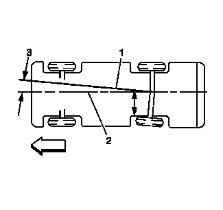

推力角的说明

前轮为车辆定向或转向。后轮控制追迹。这一追迹动作与推力角 (3) 有关。推力角是后轮行驶的轨迹。理论上，推力角在几何上与车身中心线 (2) 一致。
图示中，左后轮为正前束角，使推力线 (1) 偏离中心。由此产生的相对于中心线的偏离即为推力角。
如果推力角设置不正确，车辆行驶路线可能像“犬迹”，方向盘可能无法回正或误认为车桥弯曲。可在车轮定位时检查推力角。
正推力角表示推力线指向车辆的右侧 (RHS)。
负推力角表示推力线指向车辆的左侧 (LHS)。
如果推力角超出规格值，则改变车桥至车身的关系将改变推力角读数。
如果车辆在正 (+) 方向行驶，则RHS向前移动或LHS向后移动使得推力角归零。
如果车辆在正 (-) 方向行驶，则RHS向后移动或LHS向先移动使得推力角归零。